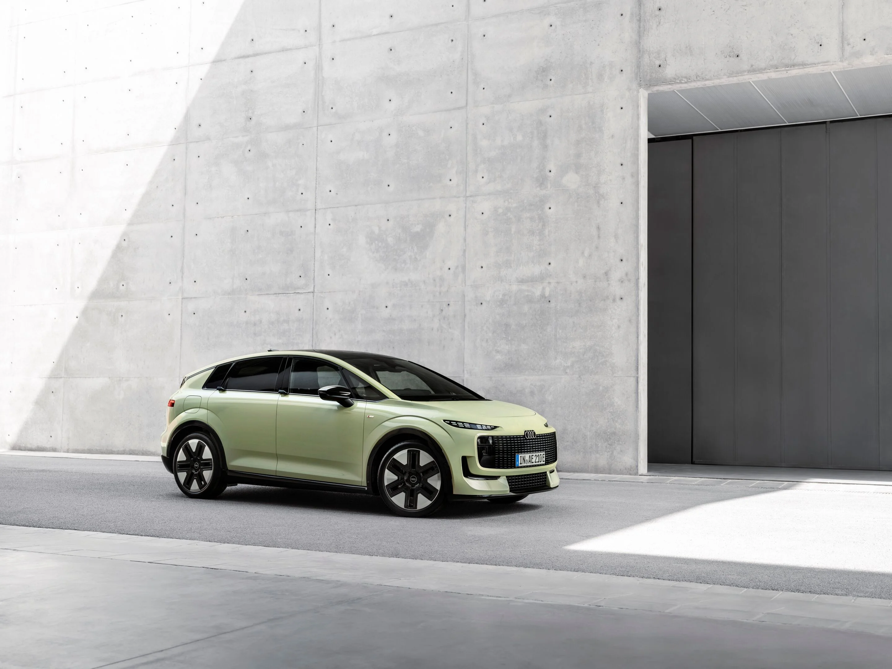
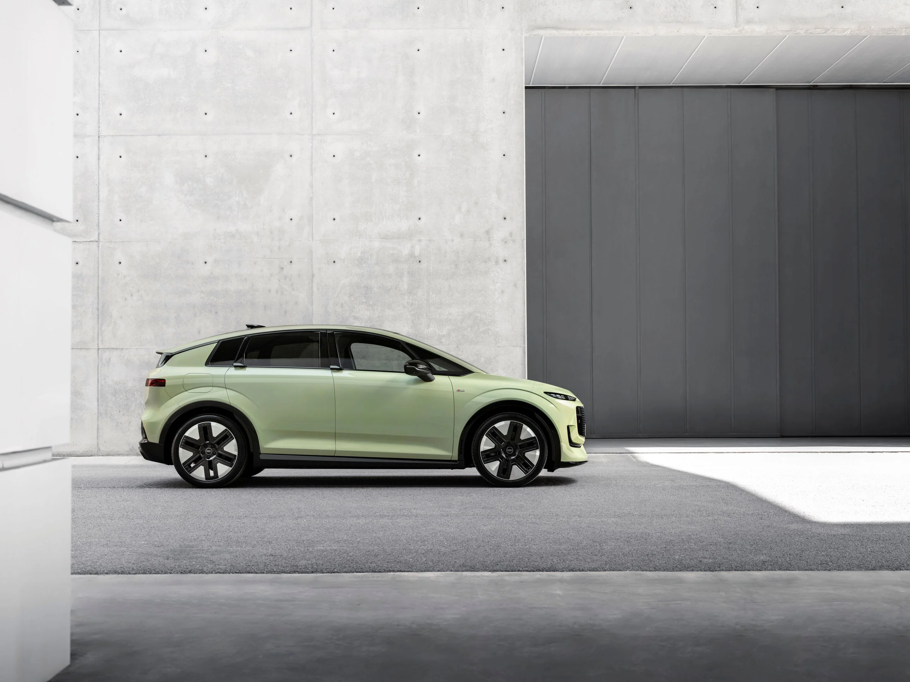
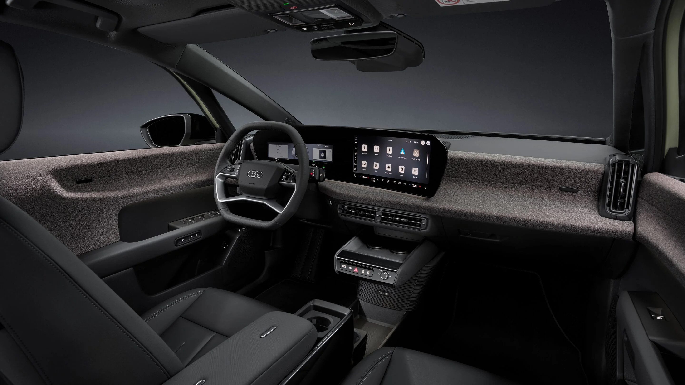
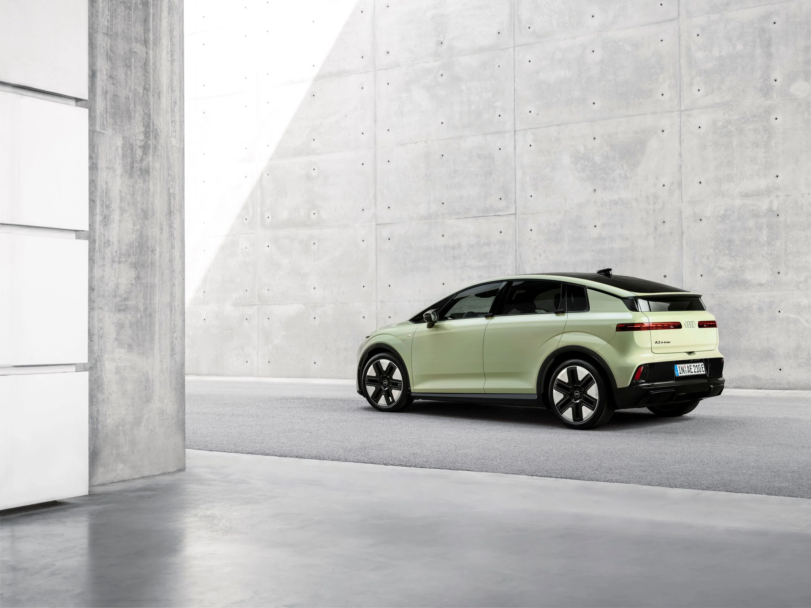

▲ 아우디가 공개한 신형 A2 e-트론. 짧은 노즈와 크게 기울어진 앞유리로 해치백과 MPV의 중간 형태를 취했다
1. 26년 만에 부활한 이름, 이번엔 전기차다
아우디가 2026년 9월 7일(현지시간) 소형 전기차 'A2 e-트론'을 공식 공개했다. A2는 2000년 처음 등장해 알루미늄 스페이스프레임 차체와 뛰어난 연비로 주목받았던 아우디의 콤팩트 해치백으로, 2005년 단종된 이후 26년 만에 이름을 되살렸다. 아우디 CEO 게르노트 될너는 "고객이 원하는 것은 일상을 바꿀 실용적인 전동화"라며, A2 e-트론이 프리미엄 전기 이동성 시장의 새로운 진입점 역할을 하게 될 것이라고 밝혔다.
아우디는 이번 신차를 통해 그동안 전기차 시장에서 이어져 온 "더 크고 무거운 배터리를 얹어 몸집을 키우는" 경쟁 구도에 제동을 걸겠다는 의지를 분명히 했다. 작은 차체에 고효율 기술을 집약하는 것이 A2 e-트론의 핵심 전략이다.

▲ 2000년 출시됐던 초대 아우디 A2. 알루미늄 스페이스프레임과 뛰어난 연비로 화제를 모았지만 2005년 단종됐다 ⓒ Audi
2. 브랜드 최고 효율, 100km당 12.8kWh
A2 e-트론의 가장 큰 무기는 효율이다. WLTP 기준 에너지 소비효율은 100km당 12.8kWh(약 7.8km/kWh)로, 아우디가 지금까지 양산한 어떤 모델보다도 낮은 수치다. 여기에 최적 사양 기준 공기저항계수(Cd)는 0.24로, 아우디 콤팩트 라인업 가운데 가장 낮다. 짧은 노즈, 크게 기울어진 앞유리, 뒤로 갈수록 좁아지는 루프라인과 이단 구조의 리어 유리로 마무리되는 '캠백(Kammback)' 형태가 공력 성능의 비결이다.
📍 참고로 알아두면 좋은 것
에너지 소비효율(kWh/100km)은 전기차가 100km를 달리는 데 쓰는 전력량을 뜻하며, 수치가 낮을수록 같은 배터리로 더 멀리 갈 수 있다는 의미다. 12.8kWh/100km는 준중형 전기 세단들의 평균치(대략 15~18kWh/100km)보다 20~30%가량 낮은 수준이다.
3. 배터리 3종, 최대 645km 주행
A2 e-트론은 52kWh·61kWh LFP 배터리와 84kWh NMC 배터리 등 총 3가지 용량으로 제공되며, 출력은 트림에 따라 125~240kW(약 170~326마력) 사이 4단계로 나뉜다. 최상위 사양 기준 WLTP 주행거리는 최대 645km(발표처에 따라 646km로도 소개)에 달한다. 급속충전은 최대 183kW급 DC 충전을 지원하며, 10%에서 80%까지 충전하는 데 24~29분이 걸린다. 완속 충전 시에도 89.6%에 달하는 높은 충전 효율을 갖췄다.
| 구분 | 배터리 | 최고출력 | DC 급속충전 |
|---|---|---|---|
| 엔트리 트림 | 52kWh(LFP) | 125kW(약 170마력) | 최대 183kW, 24~29분(10→80%) |
| 중간 트림 | 61kWh(LFP) | 트림별 상이 | 최대 183kW |
| 상위 트림 | 84kWh(NMC) | 최대 240kW(약 326마력) | 최대 183kW |

▲ A2 e-트론 측면. 짧은 오버행과 뒤로 갈수록 좁아지는 캠백 루프라인이 공기저항계수 0.24의 비결이다 ⓒ Audi
4. 실내 — 무선 급속충전과 Fidlock 고정 시스템
실내에는 11.9인치 가상 콕핏과 12.8인치 터치스크린이 하나로 통합돼 배치됐고, AI가 결합된 아우디 어시스턴트가 기본 제공된다. 스마트폰을 위한 25W 규격의 Qi2.2 무선 고속충전 트레이가 마련됐으며, 센터 암레스트 등에는 자석식 결합 방식인 'Fidlock' 고정 시스템이 표준 장비로 탑재돼 소지품을 간편하게 붙였다 뗄 수 있다. 2770mm에 달하는 휠베이스 덕분에 작은 차체에도 넉넉한 2열 무릎 공간을 확보했고, 적재공간은 기본 396ℓ에서 2열을 접으면 1336ℓ까지 늘어난다. 차량을 외부 전력원으로 활용하는 양방향 충전(V2L·V2H) 기능도 지원한다.

▲ A2 e-트론 실내. 11.9인치 계기판과 12.8인치 터치스크린이 하나로 이어지는 디스플레이 구성을 갖췄다 ⓒ Audi
5. 기아 EV3와 같은 체급, 엔트리 전기차 시장 격돌
A2 e-트론은 소형 차체에 실용적인 거주성을 담았다는 점에서 기아 EV3와 정확히 같은 세그먼트를 겨냥한다. 두 모델 모두 대형 배터리와 큰 차체로 승부하는 대신, 적당한 크기와 뛰어난 효율로 대중적인 전기차 수요를 노린다는 공통점이 있다. 다만 A2 e-트론은 프리미엄 브랜드 아우디의 진입 모델이라는 점에서 가격대는 다소 높게 형성될 전망이며, 독일 기준 시작 가격은 3만 8,200유로(약 5,800만원, 52kWh·125kW 사양 기준)로 책정됐다.
✅ 아우디 A2 e-트론, 이것만은 확인하세요
· 공개일: 2026년 9월 7일, 독일 잉골슈타트 생산
· WLTP 기준 최대 주행거리 645km, 에너지 효율 100km당 12.8kWh(브랜드 최고)
· 배터리 52·61kWh(LFP)·84kWh(NMC) 3종, 출력 125~240kW(약 170~326마력)
· 독일 시작 가격 3만 8,200유로(약 5,800만원)
· 주문 접수 10월(영국), 인도는 2027년 초 유럽 순차 시작

▲ A2 e-트론 후측면. 이단 구조의 리어 유리로 마감되는 캠백 디자인이 특징이다 ⓒ Audi
6. 출시 일정과 국내 출시 여부
유럽 기준 주문 접수는 2026년 9월 10일부터 시작되며, 영국 등 일부 시장은 10월부터 주문을 받는다. 초도 물량 인도는 2026년 12월 독일을 시작으로, 2027년 초 유럽 전역으로 확대될 예정이다. 아직 국내 출시 일정은 공식화되지 않았으며, 국내에는 기존 Q4 e-트론 등이 아우디의 전기차 엔트리 라인업을 맡고 있는 만큼 A2 e-트론의 국내 투입 여부와 시점은 아우디코리아의 향후 발표를 지켜봐야 한다. 관련 소식은 아우디 공식 홈페이지에서 확인할 수 있다. 바로가기
7. 정리
A2 e-트론은 단종 26년 만에 부활한 이름값에 걸맞게, 몸집 경쟁이 아닌 효율 경쟁으로 승부수를 던진 아우디의 엔트리 전기차다. 100km당 12.8kWh라는 브랜드 최고 효율과 최대 645km의 주행거리를 갖췄고, 기아 EV3와 같은 체급에서 프리미엄 전기차 대중화를 노린다. 유럽 주문은 10월부터, 인도는 2027년 초부터 시작되며, 국내 출시 여부는 아직 미정인 만큼 아우디코리아의 후속 발표를 지켜볼 필요가 있다.